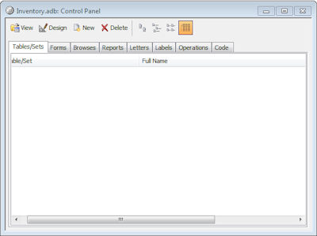

The Alpha Developer IDE
The Alpha Developer is the integrated development environment (IDE), in which you
build your application. It includes code editors, automation tools for writing and
organizing your applications, preview screens, and a debugger. The main parts of the
IDE are listed below.
Control Panel

The Control Panel is an interface for keeping track of
the files and components in applications built specifically for the Windows desktop. It
is included for backward compatibility with Alpha Five, and is generally not used when
building web and mobile applications.
Web Projects Control Panel
The Web Projects Control Panel is the primary
interface for working with the files and settings of your application. From this
control panel you can launch editors to create or modify your application. You
can preview your application, and you can publish it for deployment.
See Web Projects Control Panel Documentation for details.
Report Editor - Alpha Anywhere includes two types of a report builders/editors.
The first is called The Report Builder, and is not optimized for web/mobile use. It is
included for backwards compatibility to Alpha Five. The second is called the
Layout Table Report Editor, which is a robust, multi-banded report builder, which can be
used to create PDFs, HTML reports, and formatter Excel files.
For details see the
Layout Table Reports documentation.
Code Editors - Alpha Anywhere includes several code editors,
including an
HTML editor,
an Xbasic editor called the
Code Editor, a Javascript Editor, and action scripting
editors that can be used to create Xbasic and Javascript, which can then be
further refined in the Xbasic and Javascript editors. See the
Previews - You can see a preview of your application in one of the three
previews. Previews can be opened from within some of the component editors
as well as from the Web Projects Control Panel.
Debugger - Alpha Anywhere includes a debugger for examining and
fixing your Xbasic code. It does not contain a Javascript debugger, and instead
relies on the developer using Firebug or a similar debugger.
Settings - You can also adjust the look, feel and behavior if the
the Alpha Developer IDE itself using the
Settings dialog box, available from the
View Menu when the Web Projects Control Panel is active.